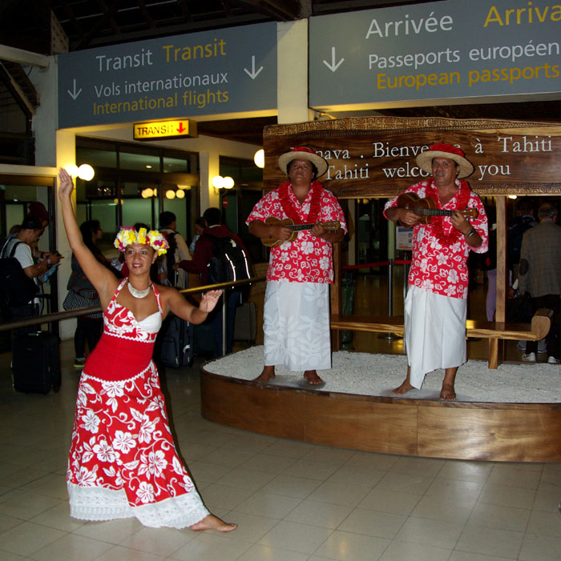

Als wir am Abend in Los Angeles in die Maschine nach Tahiti stiegen, begann für uns der eigentliche Urlaub. Der Nachtflug verlief unspektakulär. Als wir am nächsten Morgen aus dem Fenster schauten, lag unter uns plötzlich eine türkisfarbene Lagune mit einem schmalen Landstreifen mitten im Pazifik. Die Landebahn des Flughafens Faa'a war direkt auf einem Korallenriff in die Lagune gebaut worden. Schon der Anflug war spektakulär.
Der Flughafen selbst hatte mit den großen amerikanischen Airports kaum etwas gemeinsam. Das Terminal bestand damals noch aus offenen Gebäuden im polynesischen Stil mit viel Holz und weit geöffneten Hallen. Alles wirkte eher wie ein tropisches Dorf als wie ein internationaler Flughafen. Das Gepäck wurde irgendwo auf dem Vorfeld ausgeladen, Sicherheitskontrollen spielten kaum eine Rolle, und plötzlich standen da polynesische Musiker und Tänzerinnen in bunten Blumenhemden und traditionellen Kleidern. Sie sangen zur Begrüßung, und jeder ankommende Gast bekam einen Blumenkranz umgehängt. Spätestens in diesem Augenblick wussten wir: Wir waren wirklich in Polynesien angekommen.

Vor dem Flughafengebäude nahmen wir den Bus zum Hafen. Heute verkehren im Halbstundentakt moderne Schnellfähren nach Moorea. Damals war das noch anders. Es gab nur wenige langsame Autofähren am Tag, sodass wir ungefähr eine Stunde warten mussten, bevor wir übersetzen konnten.
Die Überfahrt dauerte über eine Stunde und führte durch eine Lagune, deren Farben ich bis heute nicht vergessen habe. Irgendwann sahen wir plötzlich kleine Tiere dicht über der Wasseroberfläche dahingleiten. Im ersten Moment hielten wir sie für Vögel. Doch immer wieder tauchten sie zurück ins Wasser und schossen kurz darauf an anderer Stelle erneut heraus. Erst langsam begriffen wir, was wir da zum ersten Mal in unserem Leben sahen: fliegende Fische. Für die Menschen dort war das vermutlich nichts Besonderes. Für uns war es einer dieser Augenblicke, in denen man merkt, dass man wirklich auf der anderen Seite der Erde angekommen ist.
Unser Ziel war die Cook's Bay auf Moorea. Der Name geht auf James Cook zurück, der die Insel während seiner dritten Südseeexpedition im Jahr 1777 besuchte. Interessanterweise ging er gar nicht in der heutigen Cook's Bay vor Anker, sondern in der westlich gelegenen Opunohu Bay. Erst später erkundete er auch die Nachbarbucht, die schließlich seinen Namen erhielt.
Schon bei der Einfahrt in die Bucht fiel uns der gewaltige gezackte Berg auf, der sie beherrscht. Damals wusste ich natürlich nicht, dass er Mont Rotui heißt. Ich wusste nur, dass ich noch nie einen so bizarren Berg gesehen hatte. Fast senkrecht ragte er aus dem satten Grün empor und trennte die beiden großen Buchten der Nordküste wie eine gewaltige Naturmauer.
Unsere Unterkunft hieß Chez Albert. Albert Haring war Schweizer. Eigentlich war er nur als Tourist nach Polynesien gekommen. Dann verliebte er sich in Moorea, heiratete eine Polynesierin und blieb einfach dort. Er kaufte eine Vanilleplantage oberhalb der Cook's Bay, baute einige einfache Bungalows und später sogar ein kleines Transportunternehmen auf. Solche Geschichten gab es damals auf Moorea häufiger. Die Insel war noch ein Geheimtipp für Aussteiger, lange bevor sie zu einem internationalen Reiseziel wurde.
Unser Bungalow war einfach eingerichtet. Ein Bett, eine Dusche, mehr brauchten wir nicht. Dafür lag er in einer Umgebung, die schöner kaum hätte sein können.
Am Nachmittag lud Albert seine Gäste oft auf die Veranda seines Hauses ein. Von dort blickte man über die gesamte Cook's Bay bis hinüber zum Mont Rotui. Bei einer Tasse Kaffee erzählte er Geschichten aus seinem Leben. Wie er als junger Schweizer auf Weltreise nach Polynesien gekommen war, warum er geblieben war und wie aus einer spontanen Entscheidung ein ganz neues Leben geworden war. Er sprach mit einer Gelassenheit, die beeindruckte. Man hatte nie den Eindruck, dass er auch nur einen Tag bereut hätte.
Das Klima auf Moorea folgte einem festen Rhythmus. Fast jeden Nachmittag sammelten sich die Wolken an den steilen Vulkanbergen im Inselinneren. Dann begann es zu regnen – nicht ein bisschen, sondern wie aus Kübeln. Das Wasser prasselte so laut auf das Blechdach unseres Bungalows, dass man kaum sein eigenes Wort verstand. Nach einer Stunde war der Spuk meist vorbei. Die Sonne kam wieder heraus, als wäre nichts gewesen.
Eine weniger romantische Überraschung erwartete uns am ersten Abend. Plötzlich raschelte es in unseren Rucksäcken. Ich dachte zunächst an eine Maus. Stattdessen krochen riesige Kakerlaken heraus, beinahe so groß wie kleine Mäuse. Wir erschraken gewaltig, mussten später aber selbst darüber lachen. Gefährlich waren sie nicht. Wir beförderten sie wieder nach draußen und verbrachten trotzdem eine ruhige Nacht.
Tagsüber liehen wir uns ein Moped und umrundeten die Insel. Es gab kaum Verkehr. Immer wieder hielten wir an kleinen, einsamen Stränden an, badeten oder genossen einfach den Blick auf das Meer. Unter einer Palme fanden wir eine heruntergefallene Kokosnuss. Mit einem Stein versuchten wir sie zu öffnen. Das dauerte deutlich länger als gedacht, aber irgendwann hatten wir es geschafft. Die frische Kokosmilch und das weiche Fruchtfleisch schmeckten besser als jede Kokosnuss, die wir später irgendwo kaufen konnten.
Zwischendurch fuhren wir auch nach Papeete. Die Stadt selbst war überschaubar, aber eines fiel uns sofort auf: Alles war unglaublich teuer. Französisch-Polynesien wurde schon damals in hohem Maße von Frankreich unterstützt, vieles musste importiert werden und die Preise entsprachen eher denen in Frankreich als denen Südostasiens. Für unser kleines Reisebudget waren Restaurants deshalb fast unbezahlbar. Meist kauften wir Baguette und ein paar Kleinigkeiten ein und versorgten uns selbst.
Nach einigen Tagen hieß es Abschied nehmen. Wir fuhren zurück nach Papeete, gingen noch einmal durch den kleinen Flughafen und bestiegen das Flugzeug nach Auckland. Unsere Weltreise hatte gerade erst begonnen.